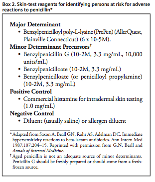

Patients who have a positive skin test to one of the penicillin determinants can be desensitized (Table 1). This is a straightforward, relatively safe procedure that can be performed orally or IV. Although the two approaches have not been compared, oral desensitization is regarded as safer and easier to perform. Patients should be desensitized in a hospital setting because serious IgE-mediated allergic reactions can occur. Desensitization usually can be completed in approximately 4–12 hours, after which time the first dose of penicillin is administered. After desensitization, patients must be maintained on penicillin continuously for the duration of the course of therapy.
